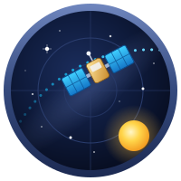

Sky Tracker
What is overhead right now, on a 480×480 touchscreen.
Made for ESPHome · Guition ESP32-4848S040

Install it from this page. Plug the board in over USB and press the button. Chrome or Edge on a desktop; Web Serial is not available in Safari or on a phone.
Wi-Fi: when the install finishes, the same dialog asks for your network (Improv over USB), so there is nothing to type on the panel. Already installed? Press the button again, pick the port and choose Connect to Wi-Fi. Or skip USB: join the Sky Tracker - XXXX access point from your phone. No credentials are compiled in.
What it does
- Sky map — the ISS, Tiangong, Starlink trains, a few hundred other satellites, the Sun, Moon and planets, stars, constellations, the Milky Way and bright comets, all worked out on the chip. Tap anything for details.
- Alerts — visible passes, aurora, meteor showers, eclipses, space weather, launches, splashdowns and objects about to re-enter, each with its own switch.
- Launches — a full-screen countdown with a QR code to the webcast, and a cartoon rocket at lift-off.
- Pictures — today's Sun, the Moon as it looks now, the Earth from GOES, and the Poker Flat all-sky camera.
- Home Assistant — ISS overhead, next pass, aurora chance and more as entities; settings from HA, the screen or the built-in web page.
- Add-ons — a GPS module sets the location, a GY-271 compass turns the map.

Adopt it in ESPHome
The configuration is open and builds unmodified. Add it to your dashboard:
github://akcoder/sky-tracker/sky-tracker.yaml@main
Updates
The device checks the project's releases once an hour and asks before
installing anything; Home Assistant shows the same update. With no network,
copy sky-tracker-esp32s3.ota.bin from the
latest
release to the root of a microSD card and put it in the slot.
Data
| Source | Used for |
|---|---|
| CelesTrak, SatNOGS | orbits, objects about to re-enter |
| NOAA SWPC | Kp, solar wind, aurora nowcast, space weather |
| NOAA GOES-19 | Sun and Earth pictures |
| UAF Geophysical Institute | all-sky camera |
| NASA SVS Dial-A-Moon | the Moon |
| JPL Small-Body Database | comets |
| The Space Devs, RocketLaunch.Live | launches, dockings, splashdowns |
| NASA, ESA via Wikimedia Commons | planet photos |
| d3-celestial | stars, constellations, Milky Way |
All free, no API key needed.